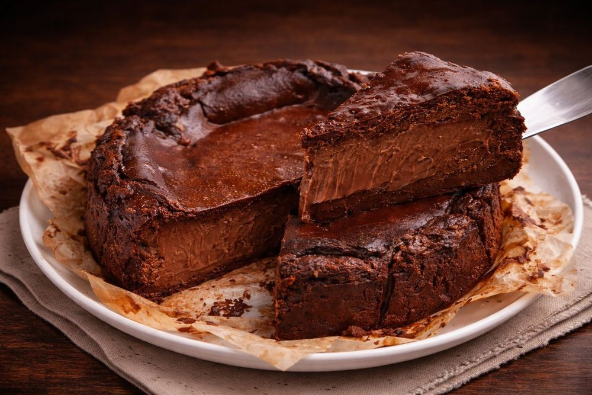

Doces · Tortas e bolos
Cheesecake basco de chocolate

Ingredientes
- 500 g de cream cheese em temperatura ambiente
- 150 g de açúcar
- 4 ovos
- 150 g de chocolate amargo (70%) derretido
- 200 ml de creme de leite
- 1 colher (chá) de farinha de trigo
Modo de preparo
- Preaqueça o forno a 200 °C (400 °F).
- Forre uma fôrma de fundo removível com papel-manteiga.
- Bata o cream cheese com o açúcar até ficar liso.
- Junte os ovos, um a um.
- Incorpore o chocolate derretido e o creme de leite.
- Despeje na fôrma e asse até a superfície ficar bem dourada e o centro ainda tremendo (cerca de 25 a 30 minutos).
Observação
Receita de imagem do Pinterest, em inglês; o tempo de forno e a farinha (a medida “1 colher (chá)” não indica o ingrediente) são estimativas minhas, ajuste ao seu forno. Como no cheesecake basco clássico, deixe esfriar na fôrma antes de desenformar.